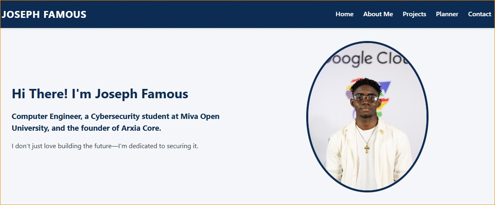
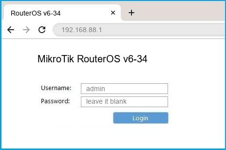

Sample Projects
Below is a list of some Academic work, Development Exercises, and Real Life Projects I have executed:

Academic Portfolio Project
A responsive multi-page portfolio constructed using Semantic HTML, CSS Grid, and custom CSS variables to match official institution branding.
View Live Project →S.A.I - Simple Artificial Intelligence
S.A.I is an offline, portable AI companion designed to run entirely from an SSD. It adapts dynamically to the user’s context — acting as a friend, mentor, colleague, or emotional support system. Inspired by the personalities of Jarvis, Vision, and Baymax, S.A.I blends logic, empathy, and humor into a single self‑contained system.
View Live Project →
Multi-Floor Network Deployment & Hardware Bridge Integration
Designed, wired, and configured a complete multi-floor network infrastructure across a 3-story residential building to resolve severe signal dropouts. The project involved pulling structured Cat6 cabling across all three floors, configuring a central MikroTik gateway, and seamlessly bridging legacy ISP hardware with a router to onboard new users without purchasing extra distribution equipment.
View Live Project →